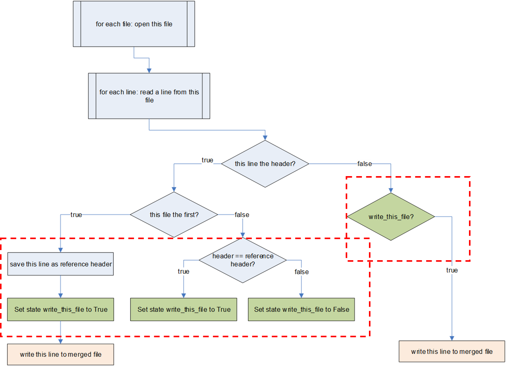

Merging logfiles OpenSesame
Contents
Merging logfiles OpenSesame¶
Warning During this tutorial we are going to work with files. You learn to create, copy, move, and delete files! Make sure you run your scripts in a location where you are allowed to edit files and that this location does not contain other files. Be careful and make sure you do not accidentially delete or move other files (copying is safer then moving or deleting!). Make backups of important files on your computer before continuing. The sandbox of Google Colab is a safe (more protected) environment to work with files.
Introduction¶
OpenSesame creates a logfile separately for each participant you run. In this tutorial we show a way to merge these logfiles by assuming they all have exactly the same format (i.e., they have identical headers). This is not necessarily the case if you run slightly different versions of the experiment for different participants! Note that during the datawrangling tutorial in a later session, you will learn about a different way to merge logfiles that is more flexible.
Step 1. Get OpenSesame data from osf¶
Let’s use some python code to download existing OpenSesame data of a Stroop task from osf. Note that the code below creates a folder called tutorial_data in your current working directory. Run the code below.
import requests
import shutil
import os
# recursively remove folder main and its content, do this if you want to start again with
#shutil.rmtree('tutorial_data')
# create the main directory
if not os.path.exists('tutorial_data'):
os.makedirs('tutorial_data')
# download the zip file
url = 'https://osf.io/download/3d9er/'
r = requests.get(url, allow_redirects=True)
open('./tutorial_data/data_pilot.zip', 'wb').write(r.content)
# extract the zip file
import zipfile
with zipfile.ZipFile('./tutorial_data/data_pilot.zip', 'r') as zip_ref:
zip_ref.extractall('./tutorial_data/'
#os.remove removes files! Always be careful!
os.remove('./tutorial_data/CI_RSI2000_test.csv') # remove one file that is atypical
Input In [10]
os.remove('./tutorial_data/CI_RSI2000_test.csv') # remove one file that is atypical
^
SyntaxError: invalid syntax
Check whether the data is properly stored and extracted. Open a csv file to see it’s content.
Step 2. Create a loop that finds all files in a particular directory¶
Let’s now create a loop that prints all the filesnames found by the os.listdir function and counts the number of files found.
# Change this to the folder that contains the .csv files
SRC_FOLDER = './tutorial_data/data/'
filecount = 0
for basename in os.listdir(SRC_FOLDER):
path = os.path.join(SRC_FOLDER, basename)
print('Reading ',path)
filecount = filecount + 1
print('Number of files considered for merge:',filecount)
Step 3. Merge all files into one csv file¶
As a next step, we are going to read in each file line by line and write them to a new merged file.
To create the new merged file and close the handle at the end use the following commands:
fout = open('./tutorial_data/merged.csv', 'w')
#... do stuff
fout.close()
To read in a file line by line and save each line to the merged file use this loop:
fhand = open(path)
for line in fhand:
fout.write(line)
fhand.close()
Insert these code snippets in the code we just created at the right locations:
# Change this to the folder that contains the .csv files
SRC_FOLDER = './tutorial_data/data/'
# ... your code here
filecount = 0
for basename in os.listdir(SRC_FOLDER):
path = os.path.join(SRC_FOLDER, basename)
print('Reading ',path)
# ... your code here
filecount = filecount + 1
print('Number of files considered for merge:',filecount)
# ... your code here
Run the code and check whether a merged file is created.
Step 4. Save the header only once¶
Let’s adapt the code and use the header only once, that is when processing the first file (defined by filecount == 0). By definition the header of a file is always the first line of this file.
In order to keep track of the line numbers per file, we use a separate counter for this, which is reset (assign value 0 to linecount) when a new file is processed.
The code below now checks whether in the loop we process the header, i.e. the first line (linecount == 0) or not. If it is not the header, we write this line to the merged file. If it is the header, we check whether it is the first file (filecount == 0), in which case we write this line. If it is not the first file, we do write the first line. Actually we do nothing (yet), but given that python does not allow to have an empty else branch of a conditional we use the pass command for now as a placeholder (in the next step we will add code here).
# Change this to the folder that contains the .csv files
SRC_FOLDER = './tutorial_data/data/'
fout = open('./tutorial_data/merged.csv', 'w')
filecount = 0
for basename in os.listdir(SRC_FOLDER):
path = os.path.join(SRC_FOLDER, basename)
print('Reading ',path)
fhand = open(path)
linecount = 0 # reset linecount because we process a new file
for line in fhand:
if linecount == 0:
if filecount == 0:
#header first file
fout.write(line)
else:
# do not write header here
pass # placeholder for future code
else:
fout.write(line)
linecount = linecount + 1
fhand.close()
filecount = filecount + 1
print('Number of files considered for merge:',filecount)
fout.close()
Run the code above and check whether it works.
Step 5. Only merge files if they have the same header¶
Now, as final step, let’s make the merging of files conditional on the fact whether the header of any new file to be added is identical to the header of the first file that is used as reference header. To make this work, we need a separate flag variable (of type boolean which is True or False) we call state_write_this_file in the script below. This variable indicates for a given moment whether the file the script is currently working one is a valid file to use for the merging (state_write_this_file == True) or not (state_write_this_file == False). In addition, we save the reference header in the string variable refheader.
We need quite a complex logic now, so it is good to use a piece of paper to write it out! In the flow diagram below we have visualized the logic of the code for you. Note that the elements in the red squares have to be added in the current step.

Compare the diagram to the code below. What lines have been added? Check whether running this code works correctly.
# Change this to the folder that contains the .csv files
SRC_FOLDER = './tutorial_data/data/'
fout = open('./tutorial_data/merged.csv', 'w')
filecount = 0
for basename in os.listdir(SRC_FOLDER):
path = os.path.join(SRC_FOLDER, basename)
if path != "./tutorial_data/data/CI_RSI2000_test.csv":
print('Reading {}'.format(path))
fhand = open(path)
linecount = 0
for line in fhand:
if linecount == 0:
if filecount == 0:
#header first file
refheader = line
fout.write(line)
write_this_file = True
else:
#check whether current header matches refheader
if line == refheader:
write_this_file = True
else:
write_this_file = False
else:
if write_this_file:
fout.write(line)
linecount = linecount + 1
print('Line Count:', linecount)
fhand.close()
filecount = filecount + 1
fout.close()
print('Number of files considered for merge:',filecount)
Exercises¶
Exercise 1. Count number of files merged¶
Add a counter to the script created in the tutorial that keeps the number of files that are merged. Add this number in the print message at the end of the script.
# your code here
Exercise 2. Manually change content of a file¶
Create a script that opens the merged file created with the code in the tutorial above. Replace all words “neutral” with “neu” and save the edited file under a new name.
# your code here
Exercise 3. Copy renamed files to another location¶
Run the following code to create a folder structure with 10 dummy textfiles nested into 10 folders. Assume that the text files reflect data belonging to ten participants.
import os
import shutil
# recursively remove folder tutorial_data2 and its content
#shutil.rmtree("tutorial_data2")
# create the tutorial_data directory
if not os.path.exists('tutorial_data2'):
os.makedirs('tutorial_data2')
# create the subdirectories
for i in range(1, 11):
directory_name = os.path.join('tutorial_data2', str(i))
if not os.path.exists(directory_name):
os.makedirs(directory_name)
# create the text files
for i in range(1, 11):
directory_name = os.path.join('tutorial_data2', str(i))
file_name = os.path.join(directory_name, 'file.txt')
with open(file_name, 'w') as f:
for j in range(1,100):
f.write('Hello world. \t This is another column with line number ' + str(j) + '\n')
Now create a new script that creates a copy of all text files just created and put this copy into the main folder (tutorial_data2). Change the name of the copies file so that the participant number (1..10) is stored into the file name in this format file_pp1.txt, file_pp2.txt, etc.
# your code here
Exercise 4. Add information as a new column to a textfile¶
Create a script that opens the textfiles you created in exercise 3 and that adds the name of its file as a first column (assume data is tab-delimited), so that each file consists of three columns.
# your code here
Exercise 5. Merge the new text files to a single textfile¶
Create a script that merges all files created in exercise 4 into a single text file. Start the text file with a header indicating file name, column 2, and column 3 separated by tabs.
Open the tab-delimited text file in a spreadsheet program and check whether it properly opens in 3-column format.
# your code here